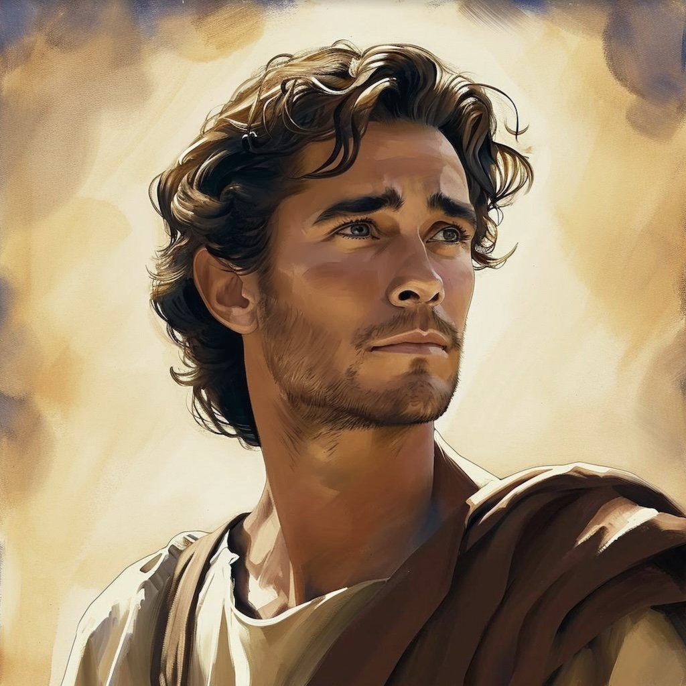
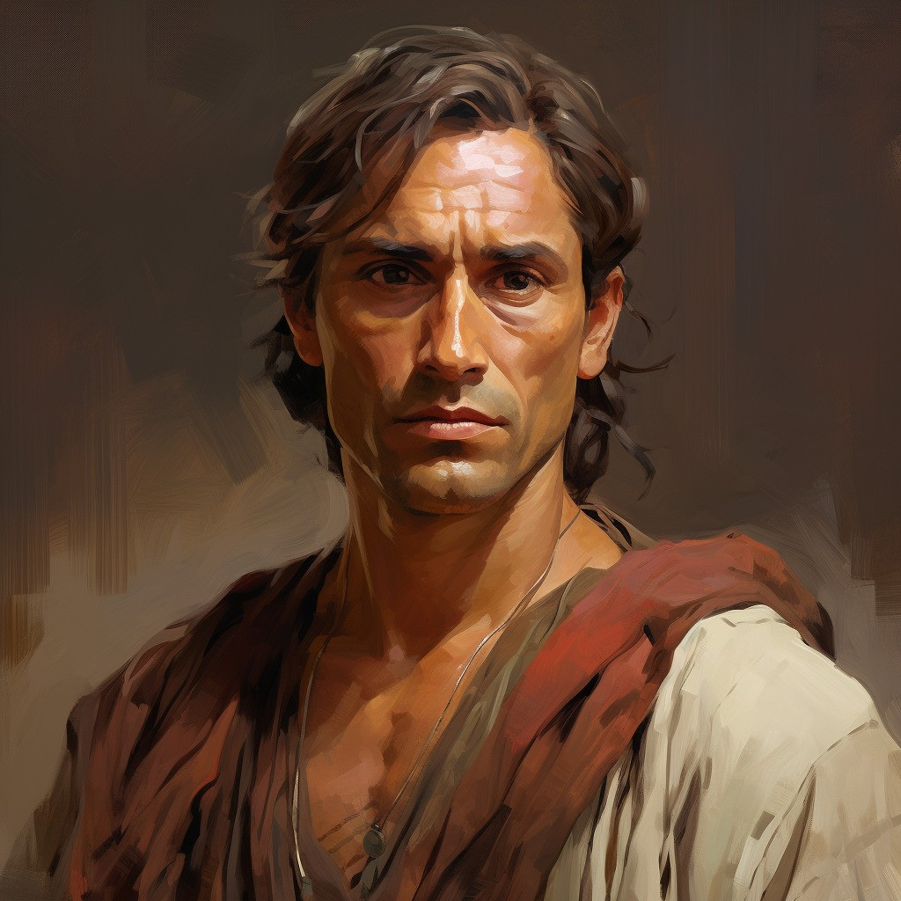
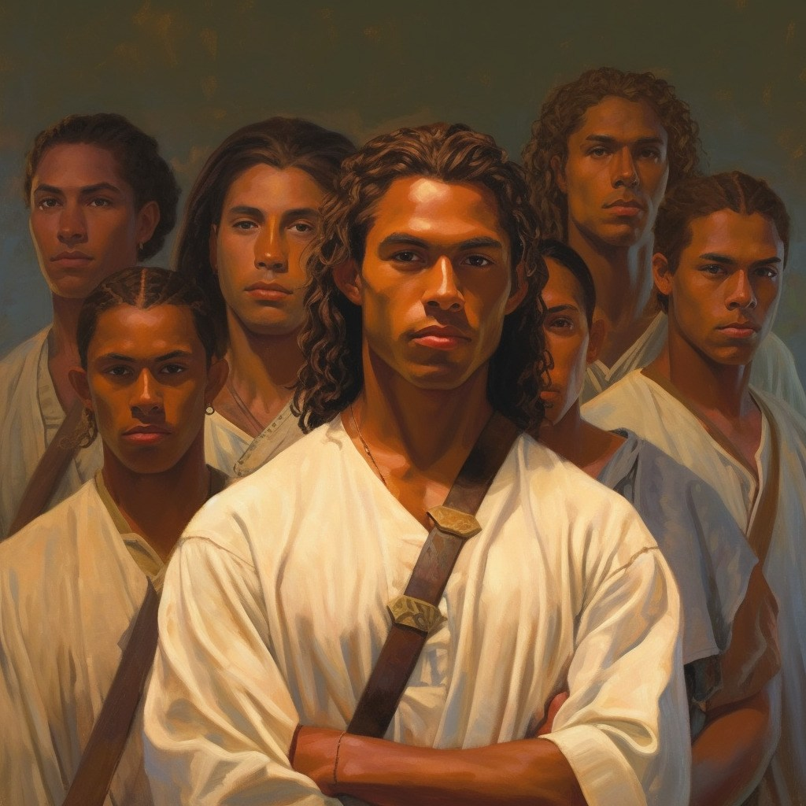

Nephi: The Faithful Pioneer

Captain Moroni: The Courageous Defender

Alma the Younger: The Redeemed Prophet

Samuel the Lamanite: The Fearless Prophet
The Stripling Warriors: Young Heroes of Faith



